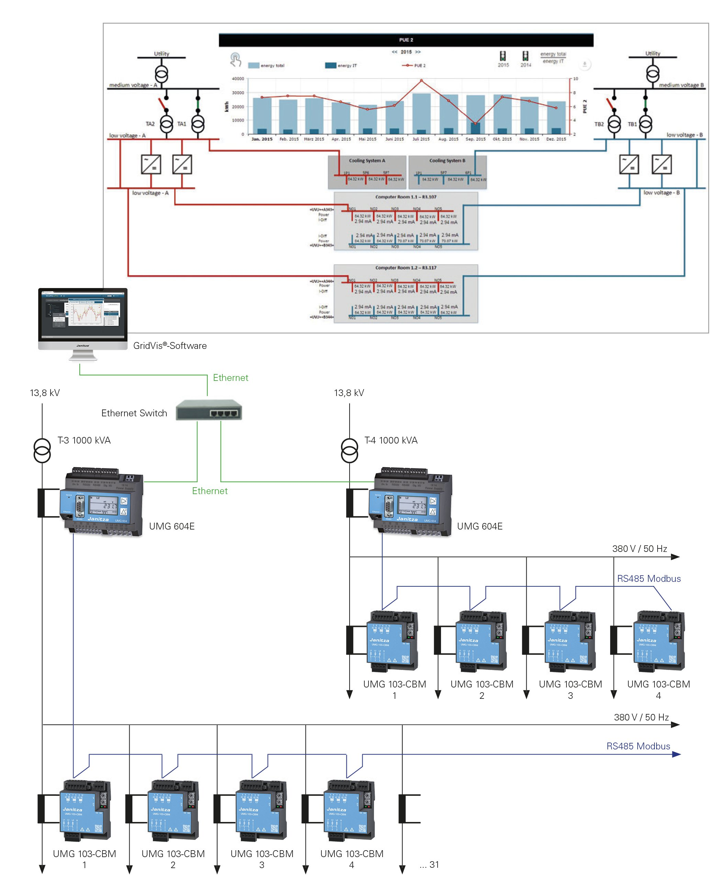
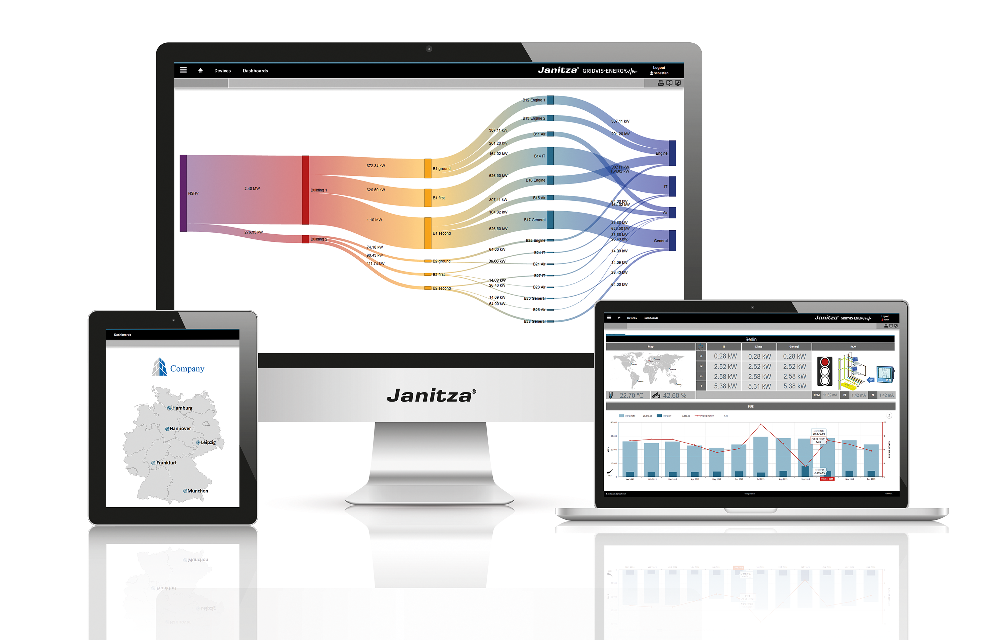

Soluciones para Utilities y Distribución Eléctrica
Transparencia de carga, monitoreo de calidad de energía y cumplimiento normativo para redes de Media y Baja Tensión (MT/BT).
Desafíos del Sector
Transparencia de Red
Monitoreo crítico de carga y perfiles de tensión en tiempo real para prevenir sobrecargas en transformadores.
Cumplimiento Normativo
Certificación y reportes automáticos bajo la norma EN 50160 para garantizar la calidad del suministro.
Integración SCADA
Interoperabilidad total mediante protocolos nativos OPC UA, Modbus y protocolos de comunicación IoT.
Arquitectura Técnica de Monitoreo
Ecosistema integrado desde el punto de medición hasta el centro de control inteligente.
Transformadores MT/BT
Puntos críticos de red
Analizadores Janitza
UMG 604 / 512-PRO
Centro de Control
GridVis / SCADA
Hardware Premium para Subestaciones
Nuestros dispositivos Clase A están diseñados para operar en entornos industriales exigentes, proporcionando datos precisos y fiables para la toma de decisiones críticas.
UMG 512-PRO
Analizador de calidad de energía Clase A (IEC 61000-4-30).
UMG 604
Ideal para monitoreo de subestaciones y perfiles de carga MT.

GridVis®: Análisis y Reportes Automatizados
Transforme los datos brutos en información accionable. GridVis permite la gestión centralizada de toda su red, identificando perturbaciones antes de que causen fallos.
- check_circle Reportes automáticos EN 50160
- check_circle Gestión de alarmas en tiempo real
- check_circle Visualización de topología de red

Caso de Éxito
Optimización de Red en Baja Tensión
"Gracias a la implementación de Janitza, logramos reducir las pérdidas no técnicas en un 15% y mejorar la respuesta ante fallos en subestaciones de distribución."
Leer artículo completo arrow_right_alt¿Listo para modernizar su infraestructura?
Consulte con nuestros expertos sobre cómo nuestras soluciones de monitoreo pueden mejorar la resiliencia de su red.